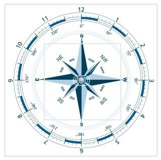

La zona tiene abundantes edificios de gran tamaño con departamentos y una alta actividad comercial, especialmente en la Avenida Cabildo y la Avenida del Libertador.
Existen dos plazas principales: Plaza Balcarce y Plaza Félix Lima (Con juegos y cancha de básquet). Entre la Avenida del Libertador y la orilla del río, hay grandes áreas al aire libre, donde existen clubes deportivos.
Av Cabildo
La avenida Cabildo es una importante avenida de la ciudad de Buenos Aires. Es considerada como uno de los principales centros de compra y paseo de la ciudad.

Nuñez
Se encuentra al norte de la misma, a orillas del Río de la Plata. Está limitado por las calles Desembocadura del Arroyo Medrano, Av. Leopoldo Lugones, Av. Guillermo Udaondo, Av. del Libertador, Av. Congreso, Zapiola, Av. Crisólogo Larralde, Av. Cabildo y Av. General Paz, y también por las costas del Río de la Plata. Limita con los barrios de Belgrano al sur, Coghlan al oeste y Saavedra al noroeste, con el Partido de Vicente López al norte, y con el Río de la Plata al este.
Plaza Balcarce
Es una de las plazas principales del barrio, se encuentra ubicada en la Avenida Cabildo y la calle Jaramillo.